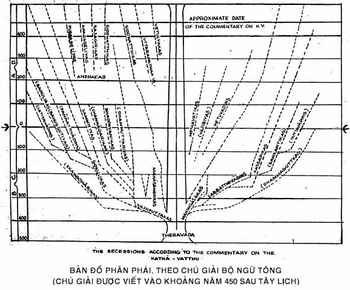

| |
MỤC LỤC |
| [00] |
Lời giới thiệu
Lời nói đầuNhững chữ viết tắt
Phân loại theo đề tài
Phân loại theo tông phái |
| [01] |
CHƯƠNG I.
1. Vấn đề hiện hữu của một thực ngã (Puggalakathā)
|
| [02] |
2. Vấn đề hoại lìa quả vị A-la-hán (Panihānikathā)
3. Vấn đề đời sống Phạm hạnh (Brahmacariyakathā)
4. Vấn đề thanh lọc (Odhisokathā)
5. Vấn đề thanh lọc ô nhiễm (Jahatikathā)
6. Vấn đề hiện hữu cùng các pháp (Sabbamatthīkathā)
7. Vấn đề uẩn quá khứ (Atītakhandahātikathā)
8. Vấn đề hiện hữu của quá khứ và vị lai (Ekaccamatthītikathā)
9. Vấn đề niệm xứ (Satipatthānakathā)
10. Vấn đề hiện hữu của các pháp (Hevatthitikathā)
|
| [03] |
CHƯƠNG II
1. Vấn đề ô nhiễm của bậc A-la-hán (Parupahārakathā)
2. Vấn đề trị kiến của bậc A-la-hán (Annānakathā)
3. Vấn đề hoài nghi của bậc A-la-hán (Kankhākathā)
4. Vấn đề siêu phàm của bậc A-la-hán (Paravitāranākathā)
5. Vấn đề phát âm trong lúc nhập thiền (Vacibhedakathā)
6. Vấn đề thành đạt tuệ bằng tiếng "Khổ" (Dukkhāhārakathā)
7. Vấn đề đình trụ của tâm (Cittatthikathā)
8. Vấn đề thống khổ của thế gian (Kukkulakathā)
9. Vấn đề tiến trình chứng ngộ (Anupubbābhisamayakathā)
10. Vấn đề ngôn ngữ của Ðức Phật (Vohārakathā)
11. Vấn đề diệt độ (Nirodba Kathā)
|
| [04] |
CHƯƠNG III.
1. Vấn đề Như Lai Lực (Balakathā)
2. Vấn đề thánh lực (Ariyantikathā)
3. Vấn đề giải thoát (Vimuccatikathā)
4. Vấn đề tiến trình giải thoát (Vimuccamānakathā)
5. Vấn đề người thứ tám (Atthamakakathā)
6. Vấn đề Quyền của người thứ tám (Atthamkssaindriyakathā)
7. Vấn đề Thiên Nhãn (Dibbacakkhukathā)
8. Vấn đề Thiên Nhĩ (Dibbasotakathā)
9. Vấn đề Thiên Nhãn minh và hạnh nghiệp chúng sanh
(Yāthkammūpaganānakathā)
10. Vấn đề thu thúc ở cõi Chư thiên (Samvarakathā)
11. Vấn đề cõi vô tưởng (Asannakathā)
12. Vấn đề cõi Phi tưởng phi phi tưởng (Nevasannanā
sannayatanakathā)
|
| [05] |
CHƯƠNG IV
1. Vấn đề cư sĩ và A-la-hán (Gahissa arahātikathā)
2. Vấn đề tục sinh (Upapattikathā)
3. Vấn đề A-la-hán và cảnh lậu (Anāsavakathā)
4. Vấn đề thánh quả (Samannāgatakathā)
5. Vấn đề A-la-hán và lục xả (Upekkhāsamannāgatakathā)
6. Vấn đề giác ngộ (Bodhiyābuddhotikakathā)
7. Vấn đề tướng hảo (Lakkhannakathā)
8. Vấn đề thánh đạo của bồ tát (Niyāmokkantikathā)
9. Vấn đề tùy dụng quả (Aparāpisamannagatakathā)
10. Vấn đề đoạn tận triền cái (Sabbasaññājannappahānakathā)
CHƯƠNG V
1. Vấn đề giải thoát (Vimuttakathā)
2. Vấn đề tuệ của bậc vô học (Asekhanaññākathā)
3. Vấn đề ảo giác trong thiền (Viparītakathā)
4. Vấn đề Thánh đạo nhất định (Niyāmakathā)
5. Vấn đề tuệ phân tích (Patisambhidakathā)
6. Vấn đề phàm tuệ (Sammatiñānakathā)
7. Vấn đề đối tượng của tâm (Cittarammarakathā)
8. Vấn đề tuệ vị lai
9. Vấn đề tuệ hiện tại
10. Vấn đề tuệ quả (Phalanãna kathā)
CHƯƠNG VI
1. Vấn đề định luật cố nhiên (Niyāmakathā)
2. Vấn đề Y Tương sinh (Paticcasamuppādakathā)
3. Vấn đề Tứ đế (Saccakathā)
4. Vấn đề cõi vô sắc (Arupakathā)
5. Vấn đề nhập Diệt thọ Tưởng định (Nirodhasamāpatti
kathā)
6. Vấn đề hư không (Akāsa kathā)
7. Vấn đề hư không là đối tượng của nhãn (Akāsa sanidassanati
kathā)
8. Vấn đề Tứ Ðại ngũ quyền và Thân nghiệp là đối tượng của nhãn
(Pathavidhatu Cakkhundriya kāyakamma Sanidassanātayādikathā)
|
| [06] |
CHƯƠNG VII
1. Vấn đề phân loại các pháp (Sangahita kathā)
2. Vấn đề tương ưng của các pháp (Sampayutta kathā)
3. Vấn đề sở hữu tâm ((Cetasikakathā)
4. Vấn đề bố thí. (Dānakathā)
5. Vấn đề hưởng dụng phước báu (Paribhoga
mayapunnakathā)
6. Vấn đề quả của sự bố thí (Itodinnakathā)
7. Vấn đề đại địa và nghiệp (Pathavikammavipākatikathā)
8. Vấn đề lão tử và nghiệp. (Jarāmaranavipākatikathā)
9. Vấn đề nghiệp và quả của bậc thánh (Ariyākammavipākatikathā)
10. Vấn đề pháp nhân và pháp quả (Vipāko vipākadhannadhammoti
kathā)
CHƯƠNG VIII
1. Vấn đề lục đạo (Gatikathā)
2. Vấn đề trung hữu (Thân trung ấm) (Antarābhavakathā)
3. Vấn đề lạc ở dục giới. (Kāmagunakathā)
4. Vấn đề dục (Kāmakathā)
5. Vấn đề sắc pháp trong cõi sắc giới (Rūpadhatū kathā)
6. Vấn đề phi sắc pháp trong cõi vô sắc giới (Arūpadhatū kathā)
7. Vấn đề xứ trong cõi sắc giới (Rūpadhātuyā āyatana kathā)
8. Vấn đề sắc pháp ở cõi vô sắc giới (Arūperūpa
kathā)
9. Vấn đề sắc nghiệp (Rūpamkammatikathā)
10. Vấn đề sắc mạng quyền (Rupejivitindriyakathā)
11. Vấn đề quả nghiệp (Kammahetukathā)
|
| [07] |
CHƯƠNG IX
1. Vấn đề đoạn tận triền cái (Anisamsakathā)
2. Vấn đề bất tử là đối tượng của triền
(Amātarammanakathā)
3. Vấn đề sắc có thể biết cảnh (Rūpam
sārammanantikathā)
4. Vấn đề pháp tùy miên không biết cảnh (Anusaya
anārammanatikathā)
5. Vấn đề tuệ không biết cảnh (Nānam
anārammanantikathā)
6. Vấn đề tâm biết cảnh quá khứ (Atitārammanakathā)
7. Vấn đề tâm biết cảnh vị lai (Anāgatātammanakathā)
8. Vấn đề chi tâm và các sự liên hệ
(Vitakhānupatitakathā)
9. Vấn đề Tầm và Tứ là điều kiện phát sanh
(Vitakkavipphara saddakathā)
10. Vấn đề ngôn ngữ phù hợp với tư tưởng
(Nayathācittassa vā catikathā)
11. Vấn đề hành động phù hợp với tư tưởng (Nayathā
cittassakāya kammantikathā)
12. Vấn đề quá khứ, vị lai và hiện tại (Atītānāgata
paccupanna kathā)
CHƯƠNG X
1. Vấn đề Diệt độ (Niradhakathā)
2. Vấn đề đạo và sắc pháp (Rūpammaggotikathā)
3. Vấn đề chứng đạo và ngũ thức (Pañcaviññāna
sāmangimaggabhāvanākathā)
4. Vấn đề tính cách đạo đức của ngũ thức
(Pañcaviññāna kusalāpitikathā)
5. Vấn đề ngũ thức và kiến phược (Pañcaviññāna
sabhogātikathā)
6. Vấn đề nguyên tắc của giới luật (Dvīhisīlehi
sanannagatotikathā)
7. Vấn đề giới và sở hữu tâm (Sīlam
acetasikantikathā)
8. Vấn đề giới và tâm (Sīlam
nacittānuparivattītikathā)
9. Vấn đề giới và thọ nguyện giới
(Samādānahetukakathā)
10. Vấn đề biểu tri và giới (Viññatti sīlantikathā)
11. Vấn đề vô biểu tri và phi giới (Aviññatti
dussīlyantikathā)
CHƯƠNG XI
1. Vấn đề tùy miên (Tissopi anusayakathā)
2. Vấn đề tuệ (Ñānakathā)
3. Vấn đề Tuệ và Tâm (Ñānam citta
vippayuttantikathā)
4. Vấn đề phát âm "Ðây là Khổ" (Idandukkhantikathā)
5. Vấn đề thần thông (Iddhibalakathā)
6. Vấn đề tâm định (Samādhikathā)
7. Vấn đề sự hiện hữu của các pháp
(Dhammathitatākathā)
8.
Vấn đề vô thường (Aniccatākathā)
CHƯƠNG XII
1. Vấn đề Thu Thúc và Nghiệp (Samvaro kammatikathā)
2. Vấn đề Nghiệp (Kammakathā)
3. Vấn đề Thinh và Quả (Saddo vipākotikathā)
4. Vấn đề lục nhập (Salāyatannakathā)
5. Vấn đề giới hạn về cách tái sanh của bậc Thất lai
(Sattakkhattuparamakathā)
6. Vấn đề lục lai của bậc Dự lưu (Kolankola
ekavījīkathā)
7. Vấn đề giới sát sanh của bậc hữu học
(Jīvitavoropanakathā)
8. Vấn đề khuynh hướng tà kiến của người chánh kiến
(Duggatikathā)
9. Vấn đề khuynh hướng tà kiến của bậc Thất lai
(Sattamabhavikakathā)
|
| [08] |
CHƯƠNG XIII
1. Vấn đề hình phạt trong Vô gián địa ngục (Kappatthakathā)
2. Vấn đề tâm thiện của chúng sanh ở đọa xứ (Kusalacitta
patilabhakathā)
3. Vấn đề người xúi giục tạo nghiệp vô gián
(Anantarāpayuttakathā)
4. Vấn đề chứng đạo của Bồ tát. (Niyatassa niyamākathā)
5. Vấn đề chướng ngại (Nivutakathā)
6. Vấn đề pháp trói buộc và giải thoát (Sammukhībhūtakathā)
7. Vấn đề pháp lạc của thiền (Samāpanno assādetikathā)
8. Vấn đề đối tượng bất khả ái (Ahātarācakathā)
9. Vấn đề đối tượng của pháp ái là vô ký (Dhammatanhā
abyākatātikathā)
10. Vấn đề pháp ái và tập đế (Dhammatanhā na dukkha
samudāyotikathā)
CHƯƠNG XIV
1. Vấn đề hòa hợp hỗ tương giữa thiện và bất thiện
(Kusalākusalā patisandahanakathā)
2. Vấn đề tăng trưởng của lúc nhập (Sālāya tanuppattikathā)
3. Vấn đề sanh khởi liên tục của các thức
(Anantarapaccayakathā)
4. Vấn đề biểu hiện của một bậc Thánh (Ariyarūpakathā)
5. Vấn đề Tùy miên (Anno anusayotikathā)
6. Vấn đề cái bất tương ưng với tâm (Pariyuthāna citta
vippayuttantikathā)
7. Vấn đề Sắc ái và Sắc giới (Pariyāpannakathā)
8. Vấn đề vô ký (Abyākatathā)
9. Vấn đề bất liên quan luân hồi (Apariyāpannakathā)
CHƯƠNG XV
1. Vấn đề lý duyên khởi (Paccāyakathā)
2. Vấn đề Hỗ tương duyên (Aññamaññapaccayakathā)
3. Vấn đề thời gian (Addhākathā)
4. Vấn đề sát na của thời gian (Khanalayamuhuttakathā)
5. Vấn đề lậu hoặc (A¸savakathā)
6. Vấn đề Lão và Tử (Jārāmapanakathā)
7. Vấn đề thiền Diệt thọ tưởng định I (Saññā vedayitakathā)
8. Vấn đề thiền Diệt Thọ tưởng định II (Dutiya saññā
vedāyitakathā)
9. Vấn đề thiền Diệt Thọ tưởng định III (Tatiya saññā
vedāyitakathā)
10. Vấn đề thiền Diệt Thọ tưởng định và cõi Vô tưởng (Asaññā
sattūpīkākathā)
11. Vấn đề nghiệp và sự tích trữ nghiệp (Kammū pacāyakathā)
CHƯƠNG XVI
1. Vấn đề chế ngự tâm (Niggahakathā)
2. Vấn đề hộ trì tâm (Paggahakathā)
3. Vấn đề ban bố hạnh phúc (Sukhanuppadanakathā)
4. Vấn đề Tác ý (Adhiggay hamasikārakathā)
5. Vấn đề sắc pháp là nhân thiện (Rūpamhetūtikathā)
6. Vấn đề sắc pháp là pháp hữu nhân (Rūpasahetukantikathā)
7. Vấn đề sắc pháp thiện và bất thiện (Rūpam kusalā
kusalantikathā)
8. Vấn đề sắc pháp là Dị thục quả. (Rūmpam vipākotikathā)
9. Vấn đề sắc pháp trong sắc giới và vô sắc giới. (Rūpam rūpāva
carārūpavacarantikathā)
10. Vấn đề sắc ái và vô sắc ái. (Rūpārago Rūpadhatu pariyā
panrnoti ādikathā)
CHƯƠNG XVII
1. Vấn đề A-la-hán và sự tích trữ phước báu (Atthi arahato
puññūpacayotikathā)
2. Vấn đề A-la-hán và sự chết bất đắc kỳ tử (Natthi arahato
akālanaccūtikathā)
3. Vấn đề tất cả đều do Nghiệp (Sabbamadan Kammatotikathā)
4. Vấn đề Khổ đế và Quyền (Indriyabaddhakathā)
5. Vấn đề Khổ đế và Thánh đạo (Thapet vā ariya maggantikathā)
6. Vấn đề Tăng bảo và sự thọ dụng phước báu (Na vattabam sangho
dukkhinam patigganhātītikathā)
7. Vấn đề Tăng bảo và sự bố thí (Na vattabam sangho dukk chinam
Visodhetitikathā)
8. Vấn đề Tăng bảo và sự độ thực (Na vattabam sangho
bhhunjatītikathā)
9. Vấn đề Tăng bảo và quả bố thí (Na vattabam sanghassa dinram
mahapphalantikathā)
10. Vấn đề Ðức Phật và quả bố thí (Na vattabam buddhassa dinnam
mahapphalantikathā)
11. Vấn đề sự bố thí trong sạch (Dakkinā visuddhikathā)
|
| [09] |
CHƯƠNG XVIII
1. Vấn đề Ðức Phật và thế giới nhân loại (Manussa Lokakathā)
2. Vấn đề Ðức Phật và sự thuyết pháp (Dhamma desanākathā)
3. Vấn đề Ðức Phật và tâm đại bi (Karunākathā)
4. Vấn đề Ðức Phật và sự bài tiết (Gandhajātikathā)
5. Vấn đề Thánh đạo duy nhất (Ekamaggakathā)
6. Vấn đề chuyển bậc trong thiền (Jhāra sankantikathā)
7. Vấn đề sự gián đoạn của Thiền (Jhānantarikakathā)
8. Vấn đề Thiền và Cảnh thinh (Samāpanno saddam sunatitikathā)
9. Vấn đề Nhãn vật và Cảnh sắc (Cakkhunā rūpam passatītikathā)
CHƯƠNG XIX
1. Vấn đề đoạn tận phiền não (Kilesajahanakathā)
2. Vấn đề sự trống rỗng (Suññatākathā)
3. Vấn đề quả của Thánh đạo (Sāmañña phalakathā)
4. Vấn đề sự chứng ngộ (Pattikathā)
5. Vấn đề Chân đế (Tathatākathā)
6. Vấn đề Niết bàn giới (Kusalakathā)
7. Vấn đề phàm phu và định luật cố nhiên (Accanta niyāmakathā)
8. Vấn đề Ngũ quyền (Indriyakathā)
CHƯƠNG XX
1. Vấn đề tội lỗi không cố ý (Asañciccakathā)
2. Vấn đề Tuệ (và phàm phu) (Ñānakathā)
3. Vấn đề Diêm Vương (Nirāyapalakathā)
4. Vấn đề bàng sanh (Tiracchānakathā)
5. Vấn đề Thánh đạo (Maggakathā)
6. Vấn đề Tuệ (Nānakathā)
CHƯƠNG XXI
1. Vấn đề giáo pháp (Sasanakathā)
2. Vấn đề định nghiệp (Avivittathākathā)
3. Vấn đề Triền (Saññojanakathā)
4. Vấn đề thần thông (Iddhikathā)
5. Vấn đề Chư Phật (Buddhakathā)
6. Vấn đề Phật thị hiện mười phương (Sabba disākathā)
7. Vấn đề Pháp (Dhammakathā)
8. Vấn đề Nghiệp (Kammakathā)
CHƯƠNG XXII
1. Vấn đề sự viên mãn của đời sống Phạm hạnh
(Parinibbānanathā)
2. Vấn đề tam thiện (Kusalacittakathā)
3. Vấn đề tâm bất động hành (Aneñjakkathā)
4. Vấn đề chứng ngộ Tứ đế (Dhammābhisamayakathā)
5. Vấn đề chứng ngộ (Tissopīkathā)
6. Vấn đề pháp Vô ký (Abyākatakathā)
7. Vấn đề Cố hưởng duyên (Āsevanapaccayatākathā)
7. Vấn đề thời gian sát na (Khaṇikakathā)
CHƯƠNG XXIII
1. Lời nguyện kết giao (Ekādhippāyakathā)
2. Vấn đề hành dâm với bậc A-la-hán giả hiệu
(Arahantavannakathā)
3. Vấn đề thị hiện của Bồ tát (Issariyakāmakārikakathā)
4. Vấn đề những trạng thái giả hiện của tâm (Rāgapatirūpa
kādikathā)
5. Vấn đề Bất định pháp (Apurinipphannakathā)
|
-ooOoo-
Lời giới thiệu
Cô Tâm An có cho tôi xem tập "Những điểm dị biệt" dịch từ bản
tiếng Anh "Points of Controversy" - dịch từ bản Pāli "Kathāvatthu".
Như vậy tập này là một trong 7 tập thuộc "Abhidhamma Piṭaka"
tức là Luận tạng, có thể dịch là Thắng pháp hay Vi diệu pháp. Tập này theo
truyền thống Thượng Tọa bộ (Theravāda) được hình thành trong kỳ kết
tập thứ ba vào năm 246 trước Tây Lịch, dưới thời vua A Dục và đặt dưới sự
chủ tọa của Ngài Moggaliputta Tissa.
Ðây là một tập, vừa ghi chép các quan điểm của các bộ phái không thuộc
phái Thượng Tọa bộ (Theravāda) vừa trình bày quan điểm của phái
Thượng Tọa bộ về những điểm ấy. Như vậy, tập này là những tư liệu để những
ai muốn tìm hiểu sự hình thành các bộ phái, các quan điểm dị đồng và những
tranh cãi không thể nào tránh khỏi giữa các bộ phái ấy, có thể có những tư
liệu quí giá về sự sai biệt giữa các bộ phái Phật giáo.
Tập này chỉ lưu hành nội bộ dành cho Phật tử, Tăng ni, những nhà nghiên
cứu về luận A-tỳ-đàm (Abhidhamma). Tôi xin giới thiệu bản dịch của
Tâm An và Minh Tuệ, tán thán nhiệt tình hoằng pháp của hai Phật tử này.
T.P Hồ Chí Minh, ngày 11-03-1987
Tỷ Kheo THÍCH MINH CHÂU.
-ooOoo-
Lời nói đầu
Bộ Kathavatthu dịch là "Những điểm dị biệt" (Points of
Controversy) là bộ thứ năm trong bảy bộ của Luận tạng thuộc hệ thống
Pāli tạng [*].
Tác giả của bộ sách này là Ðại Ðức Trưởng lão Moggaliputta Tissa
thời vua A Dục, chính ngài làm chủ tọa kỳ kết tập Tam Tạng lần thứ ba tại
Palalipputta vào năm 246 trước Tây Lịch. Và tại hội nghị này, bộ sách của
Ngài được đưa vào Luận tạng.
Bản chú giải tập Athāsālini ghi nhận rằng thời đại Vua A Dục có
tám tông phái khác nhau, về sau lại phát triển thêm và đến thế kỷ thứ hai
sau Phật lịch, người ta tìm thấy có 18 tông phái. Tập "Những điểm dị biệt"
gồm có 216 luận điểm, liên hệ đến các vấn đề Phật đà quan, về các bậc
Thánh, về Thánh đạo, về nhân sinh quan, phàm phu - Chư thiên, về vũ trụ
quan, trạng thái hiện hữu, hư không, địa ngục v.v..
Chúng tôi dịch tập kinh này từ tác phẩm Points of Controversy
của bà Rhys Davis do hội Pāli Text Society bảo trợ [**]. Trong quá
trình dịch thuật chúng tôi gặp nhiều khó khăn về các danh từ Abhidhamma
chuyên môn, với thuật ngữ Anh văn chuyển sang Việt văn còn tương đối quá
mới trong văn học Abhidhamma, chúng tôi nương vào quyển Guide
Through the Abhidhamma Pitakas của Ngài Nyanatiloka, quyển A Manual
of Abhidhamma của Ngài Narāda do Phạm Kim Khánh dịch từ Anh
sang Việt văn (với tựa đề "Vi Diệu Pháp toát yếu"), quyển Thắng
pháp tập yếu luận của Hòa Thượng Thích Minh Châu. Chúng tôi còn dùng
một số thuật ngữ chuyên môn trong văn học Abhidhamma của Hòa Thượng
Tịnh Sự.
Ngoài ra, khi dẫn chứng các đoạn kinh chúng tôi dựa theo một số Kinh
Tạng Pāli trong Trung bộ kinh, Tăng chi bộ kinh, Tương ưng bộ kinh,
..., do Ngài Thích Minh Châu dịch thuật.
Với dịch phẩm đầu tiên, chúng tôi e ngại và dè dặt là với thuật ngữ
chuyên môn trong văn học Abhidhamma còn quá mới, đã không diễn đạt
hết ý pháp tinh hoa, thâm thúy, cách lý luận sắc bén của toàn bộ tác phẩm
nầy. Rất mong chư vị độc giả bổ khuyết thêm. Vì lý tưởng phục vụ đạo pháp,
chúng tôi có ý nguyện sách được ấn tống chỉ tặng, mà không bán, cho Chư
Tăng ni, Phật tử, những nhà nghiên cứu về A Tỳ Ðàm Luận.
Xin tỏ lòng tri ân Hòa Thượng Thích Minh Châu và ban Trị Sự Thành Hội
Phật Giáo Việt Nam đã nâng đở bằng cách bảo trợ để dịch phẩm này ra mắt
chư vị độc giả.
Xin chân thành cảm tạ chư vị Hòa Thượng, Thượng Tọa, Tăng ni Phật tử,
nhất là Hòa Thượng Tịnh Sự, Ðại Ðức Giác Chánh, Ðại Ðức Giác Nhân đã khích
lệ chúng tôi hoàn thành dịch phẩm này và chư vị Phật tử như Cô Diệu Hỷ, Cô
Diệu Trí, Cô Hồng Cúc, Cô Thoại, em Ðỗ Thành Phong ... đã góp công giúp
sức để tác phẩm sớm hoàn thành.
Xin cảm ơn các Phật tử Việt Kiều tại Anh và Pháp: Phạm Ngọc Sâm, Phạm
Văn Ðồng, Nguyễn Từ Thiện, Trần Quỳnh Như, bà Nguyễn Văn Hiểu, Nguyễn Tối
Thiện, Nguyễn Tuyết Hương, Võ Xuân Huyên, Nguyễn Thị Ngọc Liên, bà Trần
Văn Nhơn, bà Trần Văn Bạch, cô Lưu Văn Lang, Sư Tín Hỷ, và anh Lê đã đóng
góp tiền cúng dường để in tập kinh này.
Cuối Thu, Năm Ðinh Mão - Mùng 1 tháng 9 Âl
Phật Tử Tâm An - Minh Tuệ
(Trần Quỳnh Hương - Ðỗ Thành Minh)
[*] Hòa thượng Tịnh Sự dịch là "Bộ Ngữ Tông", và chúng tôi xin ghi tựa
đề nầy để nhất quán với các bộ khác của tạng Vi Diệu Pháp [Bình Anson,
09-2003].
[**] Các phần ghi chú và sắp xếp trong bản dịch Anh ngữ đã dựa theo bộ
Chú Giải Ngữ Tông của ngài Buddhaghosa [Bình Anson, 09-2003].
-ooOoo-
NHỮNG CHỮ VIẾT TẮT:
Trong các trang chú thích, chúng tôi có dùng chữ viết tắt, để Quý vị
tiện việc tra cứu, chúng tôi xin ghi rõ như sau:
| A. |
Anguttara
Nikāya (Tăng chi bộ) |
| Abhi. Sang. |
Abhidhammatthasangaha (Thắng pháp tập yếu luận) |
| Bud. Psy. Eth. |
Buddhist
Psychological Ethics
(bản dịch Anh ngữ của Dhammasangani - bộ Phân tích) |
Comp.,
Compendium |
Compendium of
Philosophy (bản dịch Anh ngữ của Abhidhammatthasangaha - Thắng pháp
tập yếu luận). |
| Dl. |
Dialogues of
the Buddha (bản dịch Anh ngữ của Trường Bộ) |
| Dhp. |
Dhammapada
(Pháp cú) |
| Ds. |
Dhammasangani
(bộ Pháp tụ) |
| D. |
Digha Nikāya
(Trường bộ) |
| M. |
Majjhima
Nikāya (Trung bộ) |
| Pss. Bret. |
Psalms of the
Brethren - Trưởng lão tăng kệ |
| Pss. Sis. |
Psalms of the
Sisters - Trưởng lão ni kệ |
| S. |
Samyutta
Nikāya (Tương ưng bộ) |
| Sn. |
Sutta Nipāta
(Kinh tập) |
| Thig. |
Therigatha
(Trưởng lão ni kệ) |
| Thag. |
Theragatha
(Trưởng lão tăng kệ) |
| Ud. |
Udāna (Phật tự
thuyết) |
| K . |
Khuddaka
Nikāya (Tiểu bộ) |
| Iti. |
Itivuttaka
(Phật thuyết như vậy) |
| Vbh. |
Vibhanga (bộ
Phân tích) |
| V., Vin. |
Vinaya (Luật
tạng) |
-ooOoo-
HỆ THỐNG QUAN ÐIỂM PHÂN LOẠI THEO ÐỀ TÀI
I. - VỀ ÐỨC PHẬT:
Ngôn ngữ hằng ngày của Ngài, II. 10.
Như Lai lực, III. 1,2.
Sự giác ngộ, IV. 6.
Tướng hảo, IV. 7.
Cúng dường đến Ngài. XVII. 10.
Ngài sống ở cõi nhân loại chỉ bằng sự thị hiện? XVIII. 1.
Ngài thuyết pháp chỉ bằng sự thị hiện? XVIII. 2.
Tâm Ðại bi của Ngài, XVIII. 3.
Chất bài tiết của Ngài, XIII. 4.
Thần thông của Ngài, XXI. 4.
Sự khác nhau của: Chư Phật, XXI. 5.
Chư Phật thị hiện mười phương, XXI. 6
Sự thị hiện của Bồ-Tát, XXIII. 3.
Sự chứng đạo của Bồ-Tát, IV. 8 ; XIII. 4.
II. - VỀ CÁC BẬC THÁNH:
A. A-LA-HÁN:
Bậc A-la-hán có thể hoại lìa quả vị không? I. 2
Thiên ma có thể làm ô nhiễm bậc A-la-hán không? II. 1
Tri kiến II. 2. IV. 10. XXII. 1.
Bậc A-la-hán có hoài nghi hay không? II. 3.
Sự siêu phàm của bậc A-la-hán có do người khác không? II. 4.
A-la-hán và cư sĩ. IV. 1.
Sự chứng quả A-la-hán. IV. 2. XXII. 5.
A-la-hán và cảnh lậu. IV. 3.
A-la-hán và lục xã. IV. 5.
Ðoạn tận triền cái của bậc A-la-hán. IV. 10.
Bậc vô học. V. 2.
Nghiệp có ảnh hưởng đến bậc A-la-hán không? VIII. 11.
Sự tích trữ phước báu. XVII.1.
Sự chết bất đắc kỳ tử. XVII.2.
Tâm tử của bậc A-la-hán. XXII.2,3.
A-la-hán giả hiệu. XXIII.2.
Sự giải thoát của bậc A-la-hán có hoàn hảo không? XXI.3, XXII.1.
B. CÁC TẦNG THÁNH THẤP HƠN.
Người thứ tám. III.5,6.
Bậc Hữu học có thể có Tuệ của bậc Vô học không? V.2.
Giới hạn của bảy lần tái sanh. XII.5, 9.
C. THÁNH ÐẠO:
Lực của bậc Thánh. III.2.
Nghiệp quả của bậc Thánh, VII.9.
Biểu hiện bên ngoài của bậc Thánh. X.2.3; XIV.4.
Khổ đế và Thánh đạo. XVII.5.
Tiếng "Khổ" và Thánh đạo. II 5,6, XI.4.
Thánh đạo duy nhất, CVIII.5.
Thánh đạo 5 chi, XX.5.
Thánh đạo nhất định, IV.8; V.4, VI.1, XX.7.
Pháp bất liên quan luân hồi, XIV.9.
III. - VỀ NGƯỜI PHÀM PHU:
Người phàm phu có thanh lọc được Ái dục và Sân hận không? I.5.
Người phàm phu có thể có một định mệnh nhất định không? XIX.7.
Người phàm phu có Tuệ không? XX.2.
Người phàm phu có thể thoát khỏi định nghiệp trong tam giới không?
XXI.2.
IV. - VỀ CHƯ THIÊN:
Chư thiên có đời sống Phạm hạnh không? I.3.
Chư thiên có thực hành sự thu thúc không? III.10.
Chư thiên vô tưởng có thể có tưởng không? III.11.
V. - VỀ TĂNG BẢO:
Tăng bảo không thể thọ nhận của bố thí, XVII.6.
Tăng bảo là phước điền của sự bố thí, XVII.7.
Tăng bảo còn "thích thú", "ăn uống", XVII.8.
Cúng dường Tăng bảo đem đến lợi ích to lớn, XVII.9.
VI. - VỀ GIÁO PHÁP:
Giáo pháp có thể được sửa đổi không? XXI.1.
VII. - VỀ CÁ NHÂN:
Tự ngã tuyệt đối và hằng hũu, I.1.
Sự hiện hũu trường cửu của các pháp quá khứ, hiện tại và vị lai. I.6 -
8. IX.12.
Các trạng thái hiện hữu của các pháp quá khứ, hiện tại và vị lai, I.10.
Tâm thức; Tiến trình tâm thức, H7; IX.6,7,12; X1; XV.3.4, XVI.4, XXII.8.
Lục thức, lục nhập, V.3; VI.8; VIII.4.5.7, IX.9; X.5, XII.4, XIV.3.
Sở hữu tâm. VII.1 - 3; IX.8; XVII.4, XVIII.9; XIX.2.
Tuệ. V.6.9.10, XVI.4.
Tuệ giải thoát III.9; V.5,8,10; IX.5; XI.2.3, XX.2.6.
Ái, VIII.4; XIII.8 - 10,XIC.7,XVI.10.
Hành động có tác ý III.10; VI.8, IX.8.11; XII.1.2, XVI.1 - 3.
Thần thông, III.7 - 9,:V.7,XI.5; XVII.2, XXI.4.
Sự tăng trưởng (vật chất) XIV.2; XXII.4,5; (đạo đức tinh thần) I.4;
II.9, III.4; IV.4,9; VII.5; X.9; XIV.2.
Mạng quyền, VIII.10.
Bào thai, XIV.2; XXII.4,5.
Chiêm bao, XXII.5,6.
Tâm giả hiện, XXIII.4.
Ngôn ngữ II.5,6;IX 9,10.
Diệt thọ tuởng định, VI.5; X.1, XV.7.10.
Thiền, II.5;V.3; VI.6, XI.6, XIIi.7; Z\XVIII.6 - 8.
Giải thoát. III.3,4; IV.10, XIII.6.
VIII. - VỀ VŨ TRỤ
(A)
Những trạng thái hiện hữu. I.6 - 9; III.11, VII. 12; IX.12.
Những cảnh giới hiện hữu, VIII.1.2; XVI.10; Dục giới. I.3.5; VIII.3; Sắc
giới, Vô Sắc giới, I.3 - 5; III.11,12; VI.4; VIII.5 - 8, XVI.10.
Ðịa ngục, XIII.1; XX.3.
Hư không. VI.6.7.
Thời gian IX.6,7, XV.3,4; XXII.8.
Sắc pháp, VI.8, VII.5 - 10; IX.3, XVI.5 - 9.
Âm thanh. II.5; IX.9 - 10. XII.3.
Có phải các pháp đều cố định, không thay đổi? XXI.7.
Bàng sanh có tái sanh trong cõi Chư thiên không? XX.4.
(B)
Chủ thể và khách thể (Nội xứ và ngoại xứ.) I.9; IX.3.
Lý duyên khởi. XV.1,2; XXII.7.
Vô thường. XI.8; XV.6.
Sự thống khổ của thế gian, II.8.
Tứ đế. II.11; VI,3; XI.4; XVII.4.
Y tương sinh, VI.2; XI.7; XV.1,2; XXIII.5.
Nghiệp: Có phải sắc pháp là quả dị thục của nghiệp? VII.7; XVI.8.
Có phải Lão và Tử là quả dị thục của nghiệp? VII.8.
Pháp quả có khả năng cho những quả khác không? VII.11.
Nghiệp có thể làm hoại lìa A-la-hán quảù không? VII.11.
Có phải tất cả nghiệp đều cho quả? XII.2.
Có phải Thinh là quả của nghiệp không? XII.3.
Có phải Lục nhập là quả của nghiệp không? XII.4.
Nghiệp và bào thai, XIV.2.
Nghiêp và sự tích trữ nghiệp, XV.11.
Có phải tất cả đều do nghiệp? XVII.3.
Tất cả nghiệp có cố định không?
Ðịnh luật cố nhiên. IV.8; V.4; XII.7,8, XIII.4: XIX.7; XX.1.
Chơn đế (Ðệ nhất nghĩa là đế). XIX.5.
IX. - VỀ VÔ VI:
Có phải Tứ đế, cõi Vô sắc, Diệt thọ tưởng định, Hư không là vô vi
không? VI.3 - 6.
Có phải Niết bàn là tâm đối tượng của Tâm câu hữu với Triền không? IX.2.
Có phải Niết bàn giới là thiện không? XIX.6.
Sự trống rỗng, XIX.2.
X. - MỘT SỐ VẤN ÐỀ KHÁC:
Thế nào là bố thí? VII.4.
Phước báu có được tăng trưởng không? VII.5.
Quả của sự bố thí. VII.6; XVII.11.
Sự tăng trưởng, I.4; II.9; II.4; IV.5,9; VII.5; X.9. XIV.2.
Sự đoạn tận triền cái, IX.1; SI.4.
Một bậc thánh có thể tu tập song song hai loại giới luật không? X.6.
Ngũ thức có tính cách đạo đức không? X.4.
Có phải giới không là một sở hữu tâm? X.7.8.
Có phải hành động biểu tri là giới không? X.10.
Có phài hành động vô biểu tri là bất thiện không? X.11.
Có phải tùy miên là pháp vô ký không? IX.4; XI.1; XIV.5.
Sự thu thúc có phải là nghiệp không? XII.1.
Chúng sanh nơi đọa xứ có thể có tâm thiện không? XIII.2.
Người xúi giục, XIII.3.
Sự căn thiện, căn bất thiện và sự hòa hợp hỗ tương. XIV.1,
Cái bất lương với tâm, XIV.6.
Có phải lậu không là cảnh lậu? XV.5.
Có phải tà kiến là pháp vô ký không? XIV? XIV.8.
Có phải Sắc pháp là thiện không? XVI.5.6.7.
Có phải Sắc pháp là quả của nghiệp không? XVI.8.
Sư đoạn tận phiền não. XIX.1.
Có phải Niết bàn là pháp thiện? XIX..6.
Ngũ quyền chỉ là pháp siêu thế, XIX.8.
Tội lỗi không cố ý, XXIII.1.
Có phải tâm chiêm bao là vô ký không? XXII.6.
Lời nguyện kết giao, XXIII,1.
-ooOoo-
18 TÔNG PHÁI
(theo bản Chú giải Bộ
Ngữ Tông của Ngài Buddhaghosa)
1) THERAVĀDINS: Thượng Tọa bộ
2) MAHIṂSĀSAKAS: Hóa Địa bộ, Di Sa Tắc bộ
3) DHAMMAGUTTIKAS: Pháp Tạng bộ
4) SARVATTHIVĀDINS: Nhất Thiết Hữu bộ
5) KASSAPIKAS: Ca Diếp bộ, Ẩm Quang bộ
6) SANKANTIKAS: Thuyết Chuyển bộ
7) SUTTAVĀDINS: Kinh Lượng bộ
8) VAJJIPUTTAKAS: Ðộc Tử bộ
9) GOKULIKAS: Kê Dận bộ
10) EKABBOHĀRIKAS: Nhất Thuyết bộ
11) DHAMMUSTARIYAS: Pháp Thượng bộ
12) BHADRAYĀNIKAS: Hiền Trụ bộ
13) CHANNAGARIKAS: Mật Lâm Sơn bộ
14) SAMMITIYAS: Chánh Lượng bộ
15) PANNATTIVĀDINS: Thi Thiết bộ
16) BAHULIKAS (BAHUSSUTIYAS): Ða Văn bộ
17) CETIYAVĀDINS: Chế Đa Sơn bộ
18) MAHĀSANGHIKAS: Ðại Chúng bộ
Bốn bộ phái Andhakas (Án-đa-la) [*]:
1) RAJAGIRIYAS: Vương Sơn Trú bộ
2) SIDDATTHAKAS: Nghĩa Thành bộ
3) PURVASELIYAS: Đông Sơn Trú bộ
4) APARASELIYAS: Tây Sơn Trú bộ
Các bộ phái khác được đề cập trong Chú giải [*]:
HETUVADINS: Thuyết Nhân Chấp bộ
VETULLAKAS: Phát Triển bộ
VAJIRIYAS: Kim Cương bộ
UTTARAPATHAKAS: Bắc Sơn Trú bộ
[*] Bổ sung theo quyển "Các bộ phái Phật giáo Tiểu thừa", André
Bareau, Pháp Hiền dịch, NXB Tôn Giáo, Hà Nội, 2003 (Bình Anson ghi chú).
-ooOoo-
HỆ THỐNG QUAN ÐIỂM PHÂN LOẠI THEO TÔNG PHÁI
I- PHÁI VAJJIPUTTAKAS
và (cùng với) phái Sammitiyas:
Ngã có một tự ngã tuyệt đối và hằng hữu, I.1
và (cùng với) các phái Sammitiyas, Sabbatthivādins, Mahāsanghikas:
Bậc A-la-hán có thể bị hoại lìa quả vị, I.2
II- PHÁI SAMMITIYAS
Không có đời sống Phạm hạnh được tu tập ở cõi Chư thiên, I.3
Phiền não được đoạn trừ từng phần, I.4
Người phàm phu đoạn trừ ái dục và sân hận, I.5
và phái Vajjiputtakas:
Có một tự ngã tuyệt đối và hằng hữu, I.1
và phái Mahāsanghikas:
Những hành động biểu tri là giới, XI.10.
Tuỳ miên là pháp vô ký, XI.1.
và các phái Andhakas nói chung:
Nhục nhãn có thể trở thành thiên nhãn, III.7
Lục xứ vẫn hiện hữu trong cõi sắc giới, VIII.7
Có Sắc aí trong sắc giới, XIV.7
Nghiệp và sự tích trữ nghiệp là những pháp khác nhau, XV.11
Sắc pháp là quả của nghiệp, XVI.8
và một vài phái thuộc Andhakas:
Thiền có năm tầng, không phải bốn, XVIII.7
và phái Pubbaseliyas:
Không có pháp nào là sắc mạng quyền. VIII.10
Tiền nghiệp có thể làm một bậc A-la-hán bị hoại lìa quả vị. VIII.11
Có trung hữu. VIII.2.
và các phái Rājagirikas và Siddhattikas:
Phước báu tăng trưởng tùy theo cách hưởng dụng. VII.5
và phái Mahimsāsakas:
Những hành động biểu thị có tính chất đạo đức, VIII.9
Sắc pháp có tính chất đạo đức, XVI.7
và các phái Mahimsasakas và Mahāsanghikas:
Trong Bát chánh đạo, có ba chi thuộc sắc pháp, không thuộc danh pháp,
X.2
và các phái Vajjiputtiyas, Sabbatthivādins và một số phái
Mahāsanghikas:
Bậc A-la-hán có thể hoại lìa quả vị, I.2.
III- PHÁI SABBATTHIVĀDINS
Tất cả các pháp đều hiện hữu một cách bền vững, I.6,7
Sự chứng đạt theo thứ lớp, II.9
và phái Uttarāpathakas:
Sự liên tục của tâm được gọi là tâm định, XI.6
và các phái Vajjiputtiyas, Sammitiyas và một số phái
Mahāsanghikas:
Bậc A-la-hán có thể hoại lìa quả vị, I.2
III.a CÁC PHÁI SABBATTHIVĀDINS, KASSAPIKAS:
Một phần quá khứ và vị lai hiện hữu. I.8
IV- PHÁI MAHĀSANGHIKAS
Những quan niệm sai lầm về thức, XVIII.9, X.5. quả nghiệp, XII.2,3,4,
và Tuệ, XI.2
Những quan niệm sai lầm về Ðạo và thức, X.3. và Ðạo và giới luật, X.6
Một người có thể chế ngự hay giúp đỡ tâm người khác, XVI.1,2
Tâm và giới khác nhau, X7.8, và sự tăng trưởng của giới tùy theo cách
thọ nguyện, X.9
Hành động không biểu tri thì bất thiện, X.11.
(Hành động không thiện phải là bất thiện)
Bậc có thần thông lực có thể sống trong một đại kiếp, XI,5
Sự thu thúc là nghiệp, XII.1
Căn thiện và căn bất thiện có thể nối tiếp liên tục, XIV.1
Các pháp liên hệ với nhau chỉ trong một loại duyên nhất định, XV.1, và
không hổ tương, XV.2.
Chư Phật có thể thị hiện mười phương, XX1,6, và bằng thần thông, các
Ngài có thể làm đình chỉ, ngưng lại một số luật tự nhiên, XXI,4
Lão tử của pháp siêu thế tự nó cũng là pháp siêu thế, XV.6. chứng ngộ
A-la-hán không cần đoạn tận triền, XX1.3
Bậc A-la-hán có thể hoại lìa quả vị, I.2
và phái Sammitiyas:
Hành động biểu tri là thiện, X.10
Tuỳ miên là pháp vô ký, XI.1
và các phái Sammitiyas và Mahimsāsakas:
Ba chi của Bát Chánh đạo thuộc về sắc pháp, X.2.
và Vajjiputtiyas, Sammitiyas và Sabbatthivādins:
Bậc A-la-hán có thể hoại lìa quả vị. I.2
V- PHÁI ANDHAKAS NÓI CHUNG:
(i) PUBBASELIYAS, (ii) APARASELIYAS. (iii) RĀJACIRIKAS, (iv)
SIDDHATTHIKAS:
Những quan niệm sai lầm về khách thể và chư thể (trong tứ niệm xứ)
I.9, về những trạng thái hiện hữu, I.10, Sự liên tục của tâm, X.1, về sự
giải thoát V.1 , Iv.10, " về sự trống rỗng " XIX.2, về Niết bàn giới,
XIX.6
Một sát na tâm đình trụ cả ngày. II.7
Khi phát âm "Ðây là khổ" , tuệ nhận thức khổ vẫn đang hiện hữu, XI.4
Sự giải thoát vẫn thành tựu với tâm có ái, X11.3 tâm giải thoát vẫn còn
nằm trong tiến trình giải thoát, IX.4
Có tưởng trong cõi vô tưởng, III.11, nhưng không có tưởng ở cõi phi
tưởng phi phi tưởng, 111.12
Hư không có thể thấy được, IV.7, cũng như tứ đại, ngũ quyền và thân
nghiệp, IV.8.
Có Tuệ hiện tại và tuệ vị lai, V.8,9.
Kinh nghiệm của quá khứ vẫn hiện hữu IX.12, trong A-la-hán đạo, quả cùa
ba đạo thấp hơn vẫn còn hiện hữu, IV.9
Ảo giác trong thiền, V.3
Tất cả Tuệ đều là tuệ phân tích, V.5, phàm tuệ chỉ có để làm đối tượng,
V.6.
Tha tâm thông chỉ có tâm làm đối tượng, V.7
Ðoạn trừ tất cả triền cái là bậc A-la-hán, IV.10, chứng ngộ A-la-hán
không cần đoạn tận triền, XXII, 1.
Ðại địa là quả của nghiệp, VII.7, cũng như lão tử, VII.8
Pháp quả tự nó có khả năng cho quả VII.10, nhưng Thánh nghiệp thì không
có quả tương ứng, VII.9
Ðịnh luật cố nhiên là Vô vi, VI, 1 cũng như, Diệt thọ tưởng định, Vi.5
Những pháp trong cõi sắc giới đều là sắc pháp, VIII.5, có sắc pháp ở cõi
vô sắc, VIII.8, cũng như cõi sắc giới, XVI.9 và có ái trong cả hai cõi
này, XVI.10.
Sự phát âm "Ðây là khổ", tuệ nhận thức khổ vẫn hiện hữu, XI.4
Vị thánh Ðệ tử có thể có tuệ quả, V.10
Các pháp được tiên liệu trước, cũng như vô thường XI.7,8
Hành giả nhập thiền có thiền làm đối tượng, XIII.7
Tùy miên khác với pháp biểu hiện tương ứng, XIV.5, và những phiền não
được biểu hiện không có sự ác ý, XIV.6
Có trạng thái giả hiện của tâm, XXIII.4
Bậc A-la-hán tích trữ phước báu, XVII.1, và chết với tâm thiện, XXII.2
Không có diêm vương ở cõi địa ngục, và bàng sanh được tái sanh ở cõi
trời, XX.3,4
Chư Phật thị hiện mười phương, XXI.5, chọn những sự thống khổ để chịu
đựng khi là Bồ tát, XXIII.3, Như lai lực là những lực chung của các bậc
thánh, III 2, và là lực chung cho các thánh Ðệ tử, III.1
Ngôn ngữ hằng ngày của Ðức Phật là pháp siêu thế, II.10
Người thứ tám (người Ðạo Dự lưu) không có ngũ quyền III.6
và phái Sammitiyas:
Nhục nhãn và nhục nhĩ có thể trở thành "thiên nhĩ" khi có pháp hỗ
trợ, III.7,8
Bậc chứng đạo Dự lưu, có quả dự lưu, có quả dự lưu, III.5
Lục xứ và sắc ái tồn tại trong cõi sắc giới, VIII.7, XIV.8
Nghiệp và nghiệp tích trữ là những pháp khác nhau, XV.11
Sắc pháp là quả của nghiệp, XVI.8
Một số phái thuộc hệ Andhakas:
Thiền có năm tầng, không phải bốn, XVIII.7
và phái Mahimsasakas:
Có hai loại diệt, II.11
Một số phái thuộc Andhakas và phái Mahimsasakas:
Có sự chuyển bậc trong thiền, XVIII.6
và phái Uttarāpathakas:
Atula là hình thức tái sanh thứ sáu, VIII.6
Có lục xứ trong cõi sắc giới, VIII.7
Diệt thọ tưởng định là vô vi, VI.5
Tà kiến là pháp vô ký, XIV.8
Các pháp cố nhiên không thay đổi, XXI.7, nghiệp cũng như vậy, XXI.8
Chỉ có một thánh đạo, không phải bốn, XVIII.5
Chất bài tiết của Ðức Phật thù thắng, XVIII.4
Bồ tát đã chứng đạo trong kiếp sống trước, IV.8
Các quả vẫn còn từng hiệp, IV.9
Tùy miên là pháp không biết cảnh. IX.4
và phái Vetulyakas:
Sự liên hệ tình dục có thể xảy ra đối với hai người có lời nguyện kết
giao XXIII.1.
và phái Sabbatthivādins, Sammitiyas và Bhadravanikas:
Sự chứng đạt theo thứ lớp, II.9
V.a PHÁI PUBBASELIYAS:
Bậc nhập thiền có thể nghe được (cảnh thinh), XVIII.8
Âm thanh chỉ đơn thuần là sự rung động của tâm và Tứ, IX.9, không phù
hợp với tư tưởng , IX.10
Hành động không phù hợp với tư tưởng, IX.11
Tiếng "Khổ" được kêu lên khi Ðạo Dự lưu được chứng đạt, II.5, và thành
tựu Tuệ giải thoát, II.6
Ðối tượng của pháp ái là pháp vô ký, XIII, 9
Tuệ bất tương ưng với tâm, XI.3
Dục giới có nghĩa là dục lạc, VIII.3
Tà kiến là pháp bất liên quan luân hồi, XIV.9
Tri kiến là bậc A-la-hán vẫn còn bất toàn, II.2
Pháp ái không phải là tập đế, XIII.10
Bậc hữu học có thể phạm giới sát sanh, XII.7
Sự chứng ngộ và quả của thánh đạo đều là vô vi, XIX.4.3
Tuệ có 12 loại là Tuệ siêu thế, XX.6
Tứ đế là vô vi, VI.3
Ngũ căn và ngũ trần tạo thành dục, VIII.4
Bất tử là đối tượng của tâm cầu hữu với triền, IX.2
và phái Sammitiyas:
Mạng quyền chỉ là danh pháp, VIII.10
Có trung hữu, VIII.2
Nghiệp có thể làm cho bậc A-la-hán bị hoại lìa quả vị, VIII.11
và phái Mahimsāsakas:
Y tương sinh là vô vi, VI.2
V.b - PHÁI PUBBASELIYAS và APARASELIYAS:
Tất cả các pháp chỉ hiện hữu trong một sát na tâm, XII.8
Lục nhập sanh khởi cùng một lúc trong thai mẹ, XIV.2
Một người có thể tác ý đến các pháp trong cùng một lúc, XVI.5
Bậc A-la-hán có thể bị ô nhiễm bởi thiên ma, II.1
Bồ tát nhất định chứng ngộ đạo quả, XIII.4
V.c - PHÁI RĀJAGTRIKAS
Hình phạt trong vô gián địa ngục kéo dài suốt cả một đại kiếp, XIII.1
Một người nhập thiền Diệt thọ tưởng định có thể chết, XV.9
V.d- PHÁI RĀJAGIRIKAS và SIDDHATTHIKAS
Sự xếp loại và tương ứng của các pháp là một ảo tưởng, VII.1, 2 và sở
hữu tâm không hiện hữu, VII.3
Bố thí là sở hữu tâm, VII.4, bố thí ở một nơi, thọ dụng ở một nơi khác,
VII.6
Bậc A-la-hán không thể chết bất đắc kỳ tử, XVII.2
Tất cả đều do nghiệp, XVII.3
Nghiệp gây đại tội phải bị đọa vào vô gián địa ngục trong cả một đại
kiếp.
và phái Sammitiyas:
Phước báu tăng trưởng tùy theo cách hưởng dụng, VII.5
VI- PHÁI GOKULIKAS
Thế gian như một hầm lửa II.8
VII- PHÁI BHADKAYANIKAS
và phái Sammitiyas, Sabbatthivadins và Andhakas.
Sự chứng ngộ được thành tựu theo thứ lớp, II.9
VIII- PHÁI MAHIMSĀSAKAS
Thánh đạo chỉ có 5 chi, XX.5
và phái Andhakas:
Có hai loại diệt, II.11
và một số phái Andhakas:
Từ tầng thiền này chuyển sang tầng thiền khác không có giai đoạn
trung gian, XVIII.6
và phái Pubbaseliyas, phái Uttarāpathakas:
Hư không là vô vi, VI.6
và phái Sammitiyas:
Hành động biểu tri là nghiệp, VIII.9, do đó sắc pháp có giá trị đạo
đức (thiện và bất thiện), XVI.7
và phái Sammitiyas và Mahasanghikas:
Ba chi thuộc Bát Thánh Ðạo là sắc pháp, không là danh pháp, X.2., vì
vậy Thánh Ðạo chỉ có năm chi, XX.5
và phái Hetuvādins:
Ngũ quyền không có trong pháp hiệp thế, XIX.8
IX- PHÁI UTTARĀPATHAKAS
Có sự liên tục sanh khởi của các thức, XIV.3
Có pháp có ái đối với đối tượng bất khả ái, XIII.8
Tâm có cảnh quá khứ và cảnh vị lai là pháp không biết cảnh, IX.6.7
Tầm liên quan đến tất cả tâm, IX.9
Sắc pháp có thề vừa là cảnh, vừa là pháp nhận biết cảnh IX.3
Tâm chiêm bao là vô ký, XXII.6
Ngũ nghịch đại tội dù không cố ý vẫn bị đọa vào Vô gián địa ngục, XX.1
Người xúi giục tạo nghiệp vô gián cơ thể chứng ngộ đạo quả thánh XIII.3
Chúng sanh trong đọa xứ không thể có tâm thiện, XIII.2
Uẩn, Xứ, Giới đều là khổ và bất định, XXIII.5
Chánh kiến loại trừ khuynh hướng tà kiến, XII.8
Chướng ngại được đoạn tận bởi người đang bị hệ lụy với chúng, XIII.5, bị
trói buộc, XIII.6
Người phàm phu có thể có tuệ nhất định, V.4, XIX.7
Bậc hữu học có tuệ của bậc vô học, V.2
Bậc bất lai chỉ có thể chứng đạt A-la-hán quả sau bảy lần tái sanh,
XII.5,6
Một người chứng đạt quả vị vẫn tùng hiệp những quả thấp. IV.4,9.
Chúng sanh trong bào thai, người đang chiêm bao có khả năng chứng ngộ,
Tứ đế, XXII.4.5.
Phiền não quá khứ vị lai và hiện tại có thể được đoạn tận, XIX.1
Cư sĩ có thể là bậc A-la-hán, IV.1, người mới tục sinh cũng vậy, IV.2
Những biểu hiện về thân và khẩu của bậc A-la-hán nương vào sắc tứ đại,
XIV.4
Các pháp của bậc A-la-hán đều phi cảnh lậu, IV.3
A-la-hán tịch diệt giống đức Phật XXII.2
Có những bậc A-la-hán giả hiệu, XXIII.2
Trở thành một vị Phật qua Tuệ giác ngộ, IV.6
Người có tướng hảo phải là một vị Bồ tát, IV.7
Vị Bồ tát thị hiện trong những khổ cảnh XXIII.3
Ðức Phật không có tâm đại bi, XVIII.3
Giáo pháp có thể được sửa đổi, XXI.1
Bố thí chỉ trong sạch về phía người cho, không trong sạch về phía người
nhận, XVII.11
Không có cố hưởng duyên, XXII.7
Chơn đế, XIX.5
và một số phái thuộc Uttarāpathakas:
Bậc A-la-hán trước khi chết vẫn có tâm thiện, XXII.2
và phái Andhakas:
Atula là hình thức tái sanh thứ sáu, VIII.1
Có lục xứ trong cõi sắc giới, VIII.7
Diệt thọ tưởng định là vô vi, IV.5
Tà kiến là pháp vô ký, XIV.8
Tất cả các pháp đều là cố nhiên, không thay đổi, XXI.7, nghiệp cũng vậy,
XXI.8
Chỉ có một thánh đạo duy nhất, không phải bốn, XVIII.5
Chất bài tiết của Ðức Phật thù thắng, XVIII.4
Bồ tát đã chứng đạo trong kiếp sống trước, IV.8
Quả vẫn tùng hiệp, IV.9
Tùy miên là pháp không biết cảnh, IX.4
và phái Sabbatthivādins:
Tâm định chỉ là sự liên tục của tâm, XI.4
và phái Mahimsāsakas:
Hư không là vô vi, VI.6
và phái Hetuvadins:
Tất cả các pháp trừ khổ đế, đều là bất định, XXIII.5
X- PHÁI HETUVADINS
"Khổ đế" bị ràng buộc bởi sự thống khổ của cảm giác XVII.4, và tất cả
các pháp hữu vi, trừ thánh đạo, đều là khổ XVII.5
Tuệ không có đối với người phàm phu, XX.2
Diệt thọ tưởng định là chẳng những pháp siêu thế, XV.7, mà còn là nhân
tái sanh vào cõi vô tưởng, XV.10
Tứ lậu không thành cảnh lậu, XV.5
Một người có thể ban hạnh phúc cho một người khác, XVI.3
và phái Mahimsāsakas:
Ngũ quyền không có trong pháp hiệp thế, XIX.8
và phái Uttarāpathakas:
Tất cả các pháp, trừ Khổ đế, đều là bất định, XXIII.5
XI- PHÁI VETULYAKAS
Ðức Phật không bao giờ sống trong thế giới nhân loại, XVIII.1
Ðức Phật không hưởng thọ vật bố thí, vì vậy sự cúng dường đến Ngài không
mang lại lợi ích to lớn, XVII.10
Tăng bảo không thọ nhận của bố thí, XVII.6.7.8.9
và phái Andhakas:
Sự liên hệ tình dục có thể xảy ra đối với người có lời nguyện kết
giao, XXIII.1
XII- MỘT SỐ QUAN NIỆM KHÔNG XÁC ÐỊNH HỆ PHÁI CỤ THỂ
Tuệ giải thoát vẫn còn nằm trong tiến trình giải thoát, III.4
Thiên nhãn có nghĩa là tuệ thấy được số phận tùy theo hạnh nghiệp, III.9
Có sự thu thúc ở cõi Chư thiên, III.10
Bậc A-la-hán tùng hiệp với lục xả, IV.5
Không vô biên xứ là vô vi, VI.4
Những pháp ở cõi vô sắc giới đều phi sắc pháp, VIII.6 (Andhakas?)
Ngũ thức có tính cách đạo đức, X.4
Trong lần tái sanh thứ 7 đối với bậc Thất lai, không có khuynh hướng tà
kiến, XII.9
Thời gian được tiên liệu trước, XV3.4
Diệt thọ tưởng định là pháp hiệp thế, XV.8
Sắc pháp là hữu nhân, XVI.6
Người phàm phu không thể thoát khỏi định nghiệp trong tam giới, XXI.2
Bậc A-la-hán vẫn còn hoài nghi, II.3, đạt được siêu phàm bởi người khác,
II.4 (Pubbaseliyas?).

Trích từ bản Anh ngữ "Points of Controversy":
|